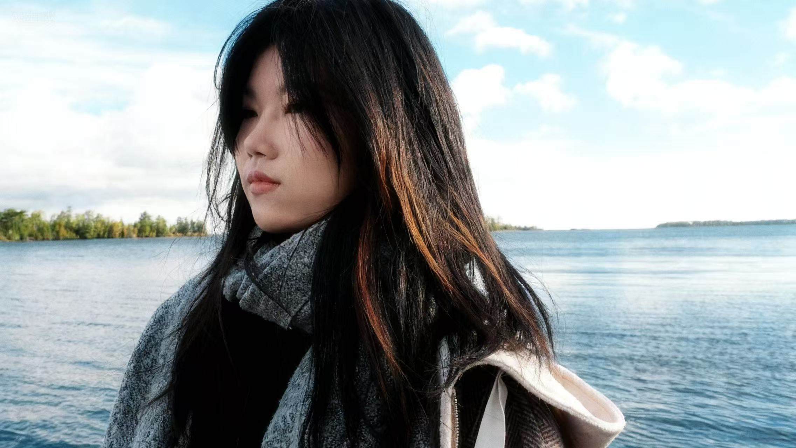

AAE AAE · University of Wisconsin–Madison
你好！我是刘汀，目前是威斯康星麦迪逊大学的博士生，研究方向是农业/发展经济学。 我对中国的城乡不平衡尤其感兴趣，包括不限于农业发展,教育，交通等领域，欢迎联系交流合作。 Hi! I'm Ting, currently a PhD student at UW-Madison, working on Agricultural/Development Economics. I'm interested in the urban-rural inequality in China, including but not limited to areas such as agricultural development, education, and transportation — feel free to reach out!
本文研究了2000年至2020年间中国高速公路扩张对农业产出的影响。尽管现有文献多关注交通基础设施投资的总体经济效应，但针对农业部门的研究相对有限，且其影响方向尚不明确。一方面，运输成本的降低提高了农产品产地价格，可能刺激农业生产；另一方面，通达城市变得更加便利，可能吸引农村劳动力转向非农就业，从而导致粮食产量下降。本文结合基于卫星遥感数据的增强植被指数（EVI）与县级年鉴中的官方粮食产量统计数据，利用交错双重差分法（staggered difference-in-differences）评估了高速公路通达对县级农业产出的因果效应。主要结果显示出一种分化现象：高速公路通达显著提高了耕地的EVI，但粮食产量却在通达后的年份里出现下降。这种模式符合作物替代的逻辑，而导致这一分化现象的具体机制尚需进一步研究。
This paper studies the effects of China’s motorway expansion between 2000 and 2020 on agricultural output. While much of the existing literature focuses on aggregate economic effects of transportation investment, evidence on the agricultural sector is limited. The direction of the effect is not clear. On one hand, lower transport costs raise farm-gate prices and may encourage agricultural production. On the other hand, cheaper access to cities may draw rural workers into non-farm jobs and reduce grain output. We combine satellite-based Enhanced Vegetation Index (EVI) data with of- ficial grain output statistics from county yearbooks, and use staggered difference-in- differences methods to estimate the causal effect of motorway access on county-level agricultural outcomes. The main results show a divergence: motorway access raises cropland EVI significantly, while grain output falls in the years after access. This pattern fits with a crop substitution story. The channels driving this divergence need further study.
[在这里写这篇论文/项目的摘要 (Abstract)。]
[Write the abstract here.]